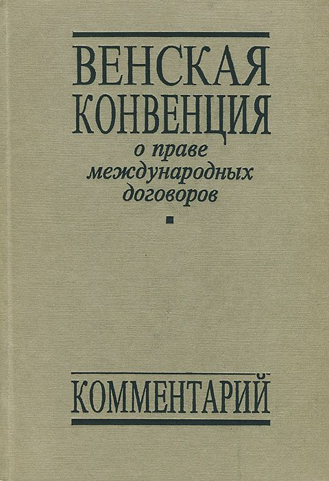

Монреальский протокол
16 сентября 1987 г. был принят Монреальский протокол по веществам, разрушающим озоновый слой. Впоследствие по инициативе ООН этот день стал отмечаться как День защиты озонового слоя. Но еще до принятия Монреальского протокола в 1985 году была принята Венская конвенция об охране озонового слоя. И к 1995 году многие страны уже приняли меры к сохранению озонового слоя, только Россия и страны Восточной Европы не предприняли шагов в этом направлении. Но сейчас и наша страна также работает над сохранением озонового слоя и прекращением его разрушения.
Венская конвенция
Венская конвенция об охране озонового слоя – это международное соглашение, направленное на повышение защищенности людей и окружающей среды от неблагоприятного воздействия изменений состояния озонового слоя планеты Земля. Принята в Вене (Австрия) и открыта для подписания 22 марта 1985 года. СССР подписал её 22 марта 1985 года, принял 18 июня 1986 года. Конвенция вступила в силу 22 сентября 1988 года, в том числе. и для СССР. К 2000 году в ней участвовали 169 государств. РФ вошла в Конвенцию как правопреемник СССР.
